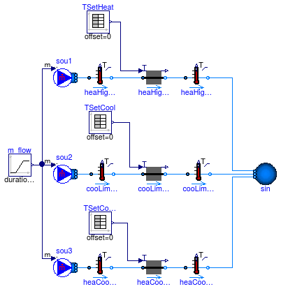

Collection of models that validate the heat exchanger models
Information
This package contains models that validate the heat exchanger models.
The examples plot various outputs, which have been verified against
analytical solutions. These model outputs are stored as reference data to
allow continuous validation whenever models in the library change.
Extends from Modelica.Icons.ExamplesPackage (Icon for packages containing runnable examples).
Package Content
Model that demonstrates use of a heat exchanger with constant effectiveness

Information
This model tests
Buildings.Fluid.HeatExchangers.ConstantEffectiveness
for different inlet conditions.
Extends from Modelica.Icons.Example (Icon for runnable examples).
Modelica definition
model ConstantEffectiveness
"Model that demonstrates use of a heat exchanger with constant effectiveness"
extends Modelica.Icons.Example;
package Medium1 =
Buildings.Media.Water;
package Medium2 =
Buildings.Media.Air;
Buildings.Fluid.Sources.Boundary_pT sin_2(
redeclare package Medium = Medium2,
use_p_in=true,
nPorts=1,
T=273.15 + 10,
X={0.001,0.999});
Modelica.Blocks.Sources.Ramp PIn(
height=200,
duration=60,
offset=101325,
startTime=50);
Buildings.Fluid.Sources.Boundary_pT sou_2(
redeclare package Medium = Medium2, T=273.15 + 5,
use_p_in=true,
use_T_in=true,
nPorts=1);
Modelica.Blocks.Sources.Ramp TWat(
height=10,
duration=60,
offset=273.15 + 30,
startTime=60)
"Water temperature";
Modelica.Blocks.Sources.Constant TDb(k=293.15)
"Drybulb temperature";
Modelica.Blocks.Sources.Constant POut(k=101325);
Buildings.Fluid.Sources.Boundary_pT sin_1(
redeclare package Medium = Medium1,
use_p_in=true,
nPorts=1,
p=300000,
T=273.15 + 25);
Buildings.Fluid.Sources.Boundary_pT sou_1(
redeclare package Medium = Medium1,
p=300000 + 5000,
T=273.15 + 50,
use_T_in=true,
nPorts=1);
Buildings.Fluid.HeatExchangers.ConstantEffectiveness hex(
redeclare package Medium1 = Medium1,
redeclare package Medium2 = Medium2,
show_T=true,
m1_flow_nominal=5,
m2_flow_nominal=5,
dp1_nominal=500,
dp2_nominal=10);
Modelica.Blocks.Sources.Trapezoid trapezoid(
amplitude=5000,
rising=10,
width=100,
falling=10,
period=3600,
offset=300000);
equation
connect(PIn.y,sou_2. p_in);
connect(TDb.y, sou_2.T_in);
connect(TWat.y, sou_1.T_in);
connect(sou_1.ports[1], hex.port_a1);
connect(hex.port_a2, sou_2.ports[1]);
connect(POut.y, sin_2.p_in);
connect(hex.port_b1, sin_1.ports[1]);
connect(sin_2.ports[1], hex.port_b2);
connect(trapezoid.y, sin_1.p_in);
end ConstantEffectiveness;
Model that demonstrates the ideal heater/cooler model for a prescribed outlet temperature, configured as steady-state

Information
Model that demonstrates the use of an ideal heater and an ideal cooler.
The heater model has a capacity of Q_flow_max = 1.0e4 Watts and
the cooler model has a capacitiy of Q_flow_min = -1000 Watts.
Hence, both only track their set point of the outlet temperature during certain times.
There is also a heater and cooler with unlimited capacity.
At t=1000 second, the flow reverses its direction.
Each flow leg has the same mass flow rate. There are three mass flow sources
as using one source only would yield a nonlinear system of equations that
needs to be solved to determine the mass flow rate distribution.
Extends from Modelica.Icons.Example (Icon for runnable examples).
Parameters
| Type | Name | Default | Description |
|---|
| MassFlowRate | m_flow_nominal | 0.1 | Nominal mass flow rate [kg/s] |
Modelica definition
model HeaterCooler_T
"Model that demonstrates the ideal heater/cooler model for a prescribed outlet temperature, configured as steady-state"
extends Modelica.Icons.Example;
package Medium =
Buildings.Media.Water;
parameter Modelica.SIunits.MassFlowRate m_flow_nominal=0.1
"Nominal mass flow rate";
Buildings.Fluid.Sources.Boundary_pT sin(
redeclare package Medium = Medium,
use_T_in=false,
p(displayUnit="Pa"),
T=293.15,
nPorts=3)
"Sink";
Buildings.Fluid.HeatExchangers.HeaterCooler_T heaHigPow(
redeclare package Medium = Medium,
m_flow_nominal=m_flow_nominal,
dp_nominal=6000,
Q_flow_maxHeat=1e4)
"Steady-state model of the heater with high capacity";
Buildings.Fluid.Sensors.TemperatureTwoPort heaHigPowOut(
redeclare package
Medium = Medium, m_flow_nominal=m_flow_nominal)
"Temperature sensor";
Modelica.Blocks.Sources.TimeTable TSetHeat(table=[0,273.15 + 20.0; 120,273.15
+ 20.0; 120,273.15 + 60.0; 500,273.15 + 60.0; 500,273.15 + 30.0; 1200,273.15 + 30.0])
"Setpoint heating";
Buildings.Fluid.Sensors.TemperatureTwoPort cooLimPowOut(
redeclare package
Medium = Medium, m_flow_nominal=m_flow_nominal)
"Temperature sensor";
Buildings.Fluid.HeatExchangers.HeaterCooler_T cooLimPow(
redeclare package Medium = Medium,
m_flow_nominal=m_flow_nominal,
dp_nominal=6000,
Q_flow_maxCool=-1000)
"Steady-state model of the cooler with limited capacity";
Modelica.Blocks.Sources.TimeTable TSetCool(table=[0,273.15 + 20.0; 120,273.15
+ 20.0; 120,273.15 + 15.0; 500,273.15 + 15.0; 500,273.15 + 10.0; 1200,273.15 + 10.0])
"Setpoint cooling";
Buildings.Fluid.HeatExchangers.HeaterCooler_T heaCooUnl(
redeclare package Medium = Medium,
m_flow_nominal=m_flow_nominal,
dp_nominal=6000)
"Steady-state model of the heater or cooler with unlimited capacity";
Modelica.Blocks.Sources.TimeTable TSetCoolHeat(table=[0,273.15 + 20.0; 120,273.15
+ 20.0; 120,273.15 + 15.0; 500,273.15 + 15.0; 500,273.15 + 30.0; 1200,273.15
+ 30.0])
"Setpoint cooling";
Buildings.Fluid.Sensors.TemperatureTwoPort heaCooUnlOut(
redeclare package
Medium = Medium, m_flow_nominal=m_flow_nominal)
"Temperature sensor";
Modelica.Blocks.Sources.Ramp m_flow(
height=-2*m_flow_nominal,
duration=100,
offset=m_flow_nominal,
startTime=1000)
"Mass flow rate";
Buildings.Fluid.Sensors.TemperatureTwoPort heaHigPowIn(
redeclare package
Medium =
Medium, m_flow_nominal=m_flow_nominal)
"Temperature sensor";
Buildings.Fluid.Sensors.TemperatureTwoPort cooLimPowIn(
redeclare package
Medium =
Medium, m_flow_nominal=m_flow_nominal)
"Temperature sensor";
Buildings.Fluid.Sensors.TemperatureTwoPort heaCooUnlIn(
redeclare package
Medium =
Medium, m_flow_nominal=m_flow_nominal)
"Temperature sensor";
Sources.MassFlowSource_T sou1(
redeclare package Medium = Medium,
use_m_flow_in=true,
nPorts=1,
T=293.15)
"Flow source";
Sources.MassFlowSource_T sou2(
redeclare package Medium = Medium,
use_m_flow_in=true,
nPorts=1,
T=293.15)
"Flow source";
Sources.MassFlowSource_T sou3(
redeclare package Medium = Medium,
use_m_flow_in=true,
nPorts=1,
T=293.15)
"Flow source";
equation
connect(heaHigPow.port_b, heaHigPowOut.port_a);
connect(TSetHeat.y, heaHigPow.TSet);
connect(cooLimPow.port_b, cooLimPowOut.port_a);
connect(TSetCool.y, cooLimPow.TSet);
connect(heaCooUnl.port_b, heaCooUnlOut.port_a);
connect(TSetCoolHeat.y, heaCooUnl.TSet);
connect(heaHigPowIn.port_b, heaHigPow.port_a);
connect(cooLimPowIn.port_b, cooLimPow.port_a);
connect(heaCooUnlIn.port_b, heaCooUnl.port_a);
connect(heaCooUnlOut.port_b, sin.ports[1]);
connect(cooLimPowOut.port_b, sin.ports[2]);
connect(heaHigPowOut.port_b, sin.ports[3]);
connect(m_flow.y, sou1.m_flow_in);
connect(sou1.ports[1], heaHigPowIn.port_a);
connect(m_flow.y, sou2.m_flow_in);
connect(m_flow.y, sou3.m_flow_in);
connect(sou2.ports[1], cooLimPowIn.port_a);
connect(sou3.ports[1], heaCooUnlIn.port_a);
end HeaterCooler_T;
Model that demonstrates the ideal heater/cooler model for a prescribed outlet temperature, configured as dynamic
Information
Model that demonstrates the use of an ideal heater and an ideal cooler, configured as dynamic models.
This example is identical to
Buildings.Fluid.HeatExchangers.Validation.HeaterCooler_T
except that the heater and cooler models are configured to have a
time constant of 60 seconds at nominal flow rate.
At lower flow rate, the time constant increases proportional to the mass flow rate.
Extends from HeaterCooler_T (Model that demonstrates the ideal heater/cooler model for a prescribed outlet temperature, configured as steady-state).
Parameters
| Type | Name | Default | Description |
|---|
| MassFlowRate | m_flow_nominal | 0.1 | Nominal mass flow rate [kg/s] |
Modelica definition
model HeaterCooler_T_dynamic
"Model that demonstrates the ideal heater/cooler model for a prescribed outlet temperature, configured as dynamic"
extends HeaterCooler_T(
heaHigPow(energyDynamics=Modelica.Fluid.Types.Dynamics.FixedInitial),
cooLimPow(energyDynamics=Modelica.Fluid.Types.Dynamics.FixedInitial),
heaCooUnl(energyDynamics=Modelica.Fluid.Types.Dynamics.FixedInitial));
end HeaterCooler_T_dynamic;
Model that demonstrates the ideal heater model

Information
Model that demonstrates the use of an ideal heater.
Both heater models are identical, except that one model is configured
as a steady-state model, whereas the other is configured as a dynamic model.
Both heaters add heat to the medium to track a set-point for the outlet
temperature.
Extends from Modelica.Icons.Example (Icon for runnable examples).
Parameters
| Type | Name | Default | Description |
|---|
| MassFlowRate | m_flow_nominal | 3000/1000/20 | Nominal mass flow rate [kg/s] |
Modelica definition
model HeaterCooler_u
"Model that demonstrates the ideal heater model"
extends Modelica.Icons.Example;
package Medium =
Buildings.Media.Air;
parameter Modelica.SIunits.MassFlowRate
m_flow_nominal=3000/1000/20
"Nominal mass flow rate";
Buildings.Fluid.Sources.Boundary_pT sin(
redeclare package Medium = Medium,
use_T_in=false,
p(displayUnit="Pa"),
T=293.15,
nPorts=2)
"Sink";
Buildings.Fluid.HeatExchangers.HeaterCooler_u heaSte(
redeclare package Medium = Medium,
m_flow_nominal=m_flow_nominal,
dp_nominal=6000,
Q_flow_nominal=3000,
energyDynamics=Modelica.Fluid.Types.Dynamics.SteadyState)
"Steady-state model of the heater";
Buildings.Fluid.Sensors.TemperatureTwoPort senTem1(
redeclare package Medium = Medium,
m_flow_nominal=m_flow_nominal)
"Temperature sensor";
Modelica.Blocks.Sources.TimeTable TSet(table=[0, 273.15 + 20; 120, 273.15
+20; 120, 273.15 + 30; 1200, 273.15 + 30])
"Setpoint";
Buildings.Controls.Continuous.LimPID con1(
controllerType=Modelica.Blocks.Types.SimpleController.PI,
Td=1,
k=1,
Ti=10)
"Controller";
Buildings.Fluid.HeatExchangers.HeaterCooler_u heaDyn(
redeclare package Medium = Medium,
m_flow_nominal=m_flow_nominal,
dp_nominal=6000,
Q_flow_nominal=3000,
energyDynamics=Modelica.Fluid.Types.Dynamics.SteadyStateInitial)
"Dynamic model of the heater";
Buildings.Fluid.Sensors.TemperatureTwoPort senTem2(
redeclare package Medium = Medium,
m_flow_nominal=m_flow_nominal)
"Temperature sensor";
Buildings.Controls.Continuous.LimPID con2(
controllerType=Modelica.Blocks.Types.SimpleController.PI,
Td=1,
Ti=10,
k=0.1)
"Controller";
Buildings.Fluid.Sources.MassFlowSource_T sou(
redeclare package Medium = Medium,
use_T_in=false,
nPorts=2,
m_flow=2*m_flow_nominal,
T=293.15)
"Source";
equation
connect(senTem1.T, con1.u_m);
connect(TSet.y, con1.u_s);
connect(con1.y, heaSte.u);
connect(heaSte.port_b, senTem1.port_a);
connect(senTem2.T, con2.u_m);
connect(TSet.y, con2.u_s);
connect(con2.y, heaDyn.u);
connect(heaDyn.port_b, senTem2.port_a);
connect(heaSte.port_a, sou.ports[1]);
connect(sou.ports[2], heaDyn.port_a);
connect(senTem2.port_b, sin.ports[1]);
connect(senTem1.port_b, sin.ports[2]);
end HeaterCooler_u;
Model that demonstrates use of a finite volume model of a heat exchanger with condensation

Information
This model is used to test the initialization of the coil model.
There are three instances of the coil model, each having different settings
for the initial conditions.
Each of the coil uses for the medium
Buildings.Media.Air.
Extends from Buildings.Fluid.HeatExchangers.Examples.BaseClasses.WetCoilDiscretized (Model that demonstrates use of a finite volume model of a heat exchanger with condensation), Modelica.Icons.Example (Icon for runnable examples).
Parameters
| Type | Name | Default | Description |
|---|
| replaceable package Medium2 | PartialMedium | Medium for air-side |
| Temperature | T_a1_nominal | 5 + 273.15 | Water inlet temperature [K] |
| Temperature | T_b1_nominal | 10 + 273.15 | Water outlet temperature [K] |
| Temperature | T_a2_nominal | 30 + 273.15 | Air inlet temperature [K] |
| Temperature | T_b2_nominal | 10 + 273.15 | Air inlet temperature [K] |
| MassFlowRate | m1_flow_nominal | 5 | Nominal mass flow rate water-side [kg/s] |
| MassFlowRate | m2_flow_nominal | m1_flow_nominal*4200/1000*(T... | Nominal mass flow rate air-side [kg/s] |
Connectors
| Type | Name | Description |
|---|
| replaceable package Medium2 | Medium for air-side |
Modelica definition
Model that demonstrates use of a finite volume model of a heat exchanger with condensation
Information
This model is used to test the initialization of the coil model.
There are three instances of the coil model, each having different settings
for the initial conditions.
Each of the coil uses for the medium
Buildings.Media.Air.
Extends from Buildings.Fluid.HeatExchangers.Examples.BaseClasses.WetCoilDiscretized (Model that demonstrates use of a finite volume model of a heat exchanger with condensation), Modelica.Icons.Example (Icon for runnable examples).
Parameters
| Type | Name | Default | Description |
|---|
| replaceable package Medium2 | PartialMedium | Medium for air-side |
| Temperature | T_a1_nominal | 5 + 273.15 | Water inlet temperature [K] |
| Temperature | T_b1_nominal | 10 + 273.15 | Water outlet temperature [K] |
| Temperature | T_a2_nominal | 30 + 273.15 | Air inlet temperature [K] |
| Temperature | T_b2_nominal | 10 + 273.15 | Air inlet temperature [K] |
| MassFlowRate | m1_flow_nominal | 5 | Nominal mass flow rate water-side [kg/s] |
| MassFlowRate | m2_flow_nominal | m1_flow_nominal*4200/1000*(T... | Nominal mass flow rate air-side [kg/s] |
Connectors
| Type | Name | Description |
|---|
| replaceable package Medium2 | Medium for air-side |
Modelica definition
Automatically generated Mon Jul 13 14:25:30 2015.
 Buildings.Fluid.HeatExchangers.Validation.ConstantEffectiveness
Buildings.Fluid.HeatExchangers.Validation.ConstantEffectiveness